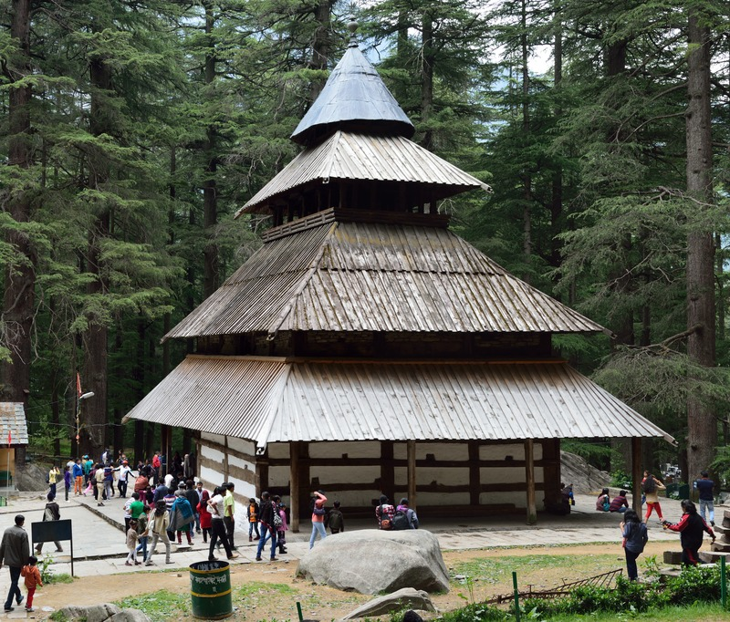
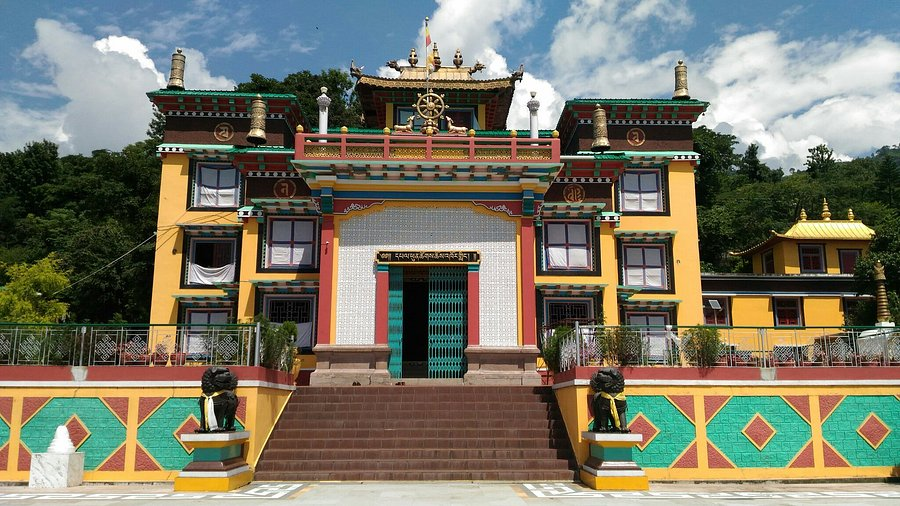
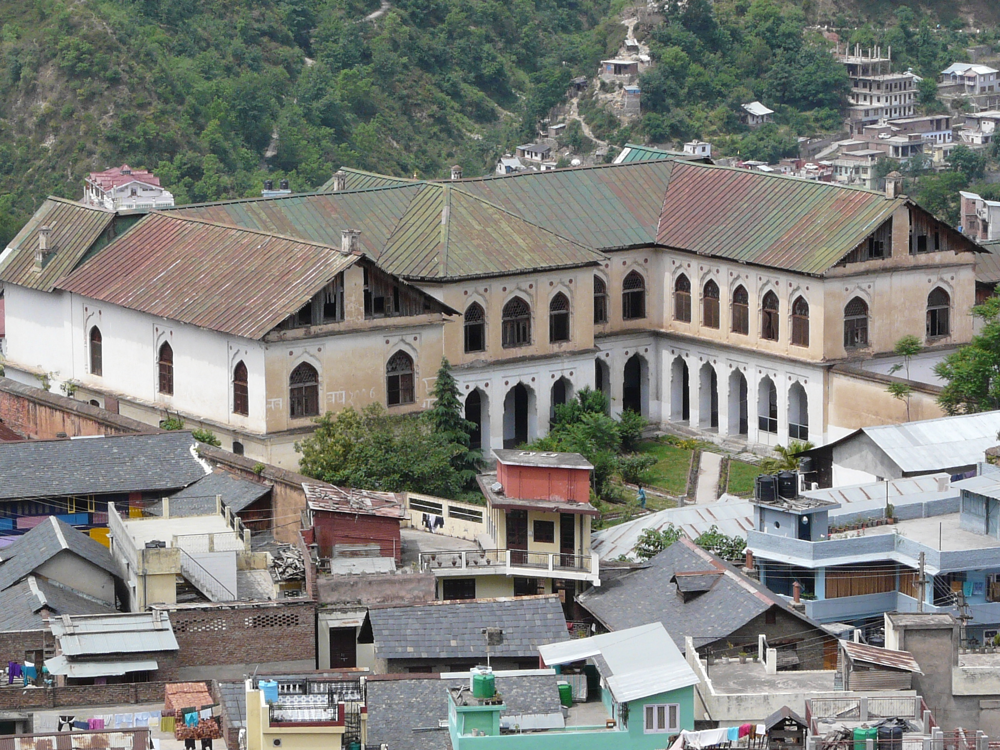
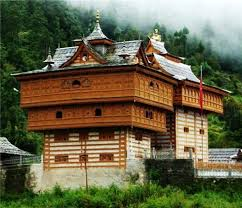
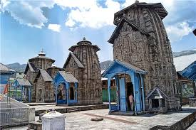
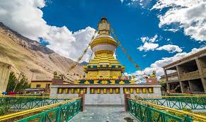
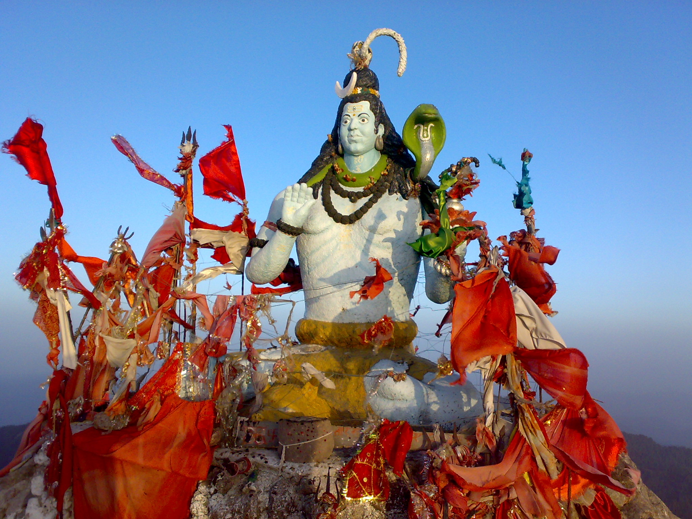

Hadimba Temple, Manali
A wooden temple dedicated to Hidimba Devi, showcasing traditional Himachali architecture and deep cultural roots.

Tashijong Monastery
A serene Buddhist monastery reflecting Tibetan culture, art, and spiritual traditions, located near Palampur.

Chamba Palace
A fine example of Pahari architecture with rich carvings, wall paintings, and historical significance.

Bhimakali Temple, Sarahan
One of the 51 Shakti Peethas in India, known for its unique blend of Hindu and Buddhist architectural styles.

Raghunath Temple
A significant scholarly source of Sarada script manuscripts and one of the largest collection of Hindu and Buddhist texts of the Kashmir tradition

Lakshmi Narayan Temple
This is the main temple of Chamba town was built by Sahil Verman in the 10th century A.D. The temple has been built in the Shikhara style. The temple consist of Bimana i.e. Shikhara and Garbhgriha with a small antralya

Tabo Monestry
Tabo Monastery is located in the Tabo village of Spiti Valley, Himachal Pradesh, northern India. It was founded in 996 CE in the Tibetan year of the Fire Ape by the Tibetan Buddhist

Churdhar Sanctuary
THE enchanting Churdhar peak in Sirmaur is one of the highest Peak of Shivalik ranges at a height of 11965 feet. Churdhar, commonly known as Churichandni (Bangle of Snow),